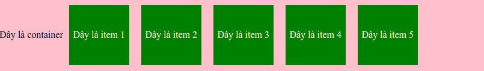
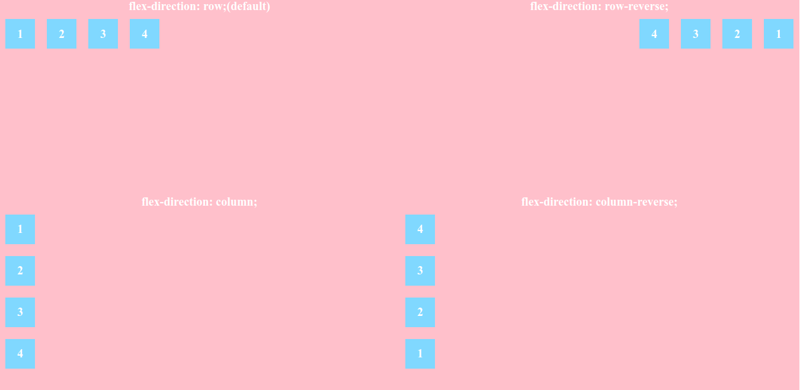

Flexbox(Flexible box) là một module của CSS giúp bạn dễ thở hơn trong việc chia bố trí, căn chỉnh và phân chia các khoảng trống của các items trong một container, đặc biệt là trong những trường hợp không biết trước về kích thước container hoặc kích thước container có thể thay đổi.
Một flexbox layout bao gồm một phần tử cha với một hoặc nhiều phần tử con. Phần tử cha dược xem là một container và các phần tử con là item.
Container được hiểu nôm na là vật chứa hay phần tử cha và có chứa các phần tử ở phía trong. Container được định nghĩa bằng thuộc tính display: flex;.
Ví dụ:
.container { display: flex; }
row(mặc định): Hiển thị các item từ trái qua phải.
row-reverse: Hiển thị các item theo thứ tự từ phải qua trái.
column: Hiển thị tất cả item từ trên xuống dưới.
column-reverse: Hiển thị tất cả item từ dưới lên trên.
no-wrap(mặc định): Toàn bộ item sẽ nằm trên một hàng hoặc một cột.
wrap: Các item có thể chia thành nhiều hàng nếu không đủ diện tích với chiều là chiều của flex-direction.
wrap-reverse: Các item có thể chia thành nhiều hàng nếu không đủ diện tích với chiều là chiều ngược với flex-direction.
Đây là cách viết rút gọn của flex-direction và flex-wrap. Ví dụ như:
.container { flex-direction: column; flex-wrap: wrap-rerverse; }
.container { flex-flow: column wrap-reverse; }
Justify content định nghĩa về sự căn chỉnh các items trong container so với trục chính
flex start: Toàn bộ items căn về điểm bắt đầu của trục chính.
flex-end: Toàn bộ items căn về điểm kết thúc của trục chính.
center: Toàn bộ items căn giữa của trục chính.
space-between: Toàn bộ items được bố trí đều nhau trên trục chính, item đầu tiên nằm ở điểm bắt đầu của trục, item cuối cùng nằm ở điểm cuối cùng của trục
space-around: Toàn bộ items được bố trí đều nhau với các khoảng trống xung quanh mỗi item đều giống nhau.
space-evenly: Toàn bộ items được bố trí với khoảng trống giữa mỗi 2 item là bằng nhau.
Justify content giúp chúng ta căn chỉnh các items trên trục chính thì align-items giúp chúng ta căn chỉnh các items theo trục đối xứng).
flex start: Toàn bộ items căn về điểm bắt đầu của trục đối xứng.
flex-end: Toàn bộ items căn về điểm kết thúc của trục đối xứng.
center: Toàn bộ items căn về điểm giữa của trục đối xứng.
baseline: Toàn bộ items được căn chỉnh theo một đường cơ sở.
stretch: Toàn bộ items sẽ giãn ra và phủ kín container.
Nếu trong container có nhiều hàng items, thuộc tính này sẽ có tác dụng tương tự như justify-content nhưng nó sẽ chia khoảng trống giữa các hàng trên trục đối xứng.
flex start: Các hàng dồn về điểm bắt đầu của trục đối xứng.
flex-end: Các hàng dồn về điểm kết thúc của trục đối xứng.
center: Các hàng dồn về giữa của trục đối xứng.
space-between: Hàng đầu tiên ở điểm bắt đầu và hàng cuối cùng ở điểm kết thúc của trục đối xứng. Các hàng còn lại sẽ chia đều khoảng cách.
space-around: Khoảng cách giữa các hàng bằng nhau.
stretch: Đây là giá trị mặc định. Các hàng sẽ giãn ra để lấp đầy container.